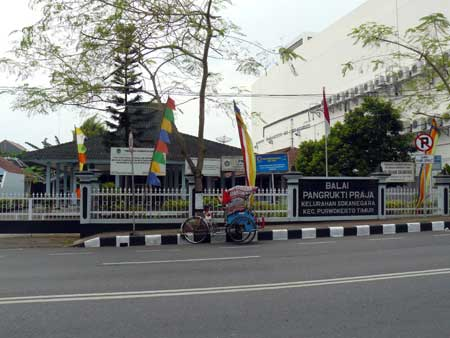

Tentang Desa Sokanegara
Sokanegara adalah kelurahan di kecamatan Purwokerto Timur, Banyumas, Jawa Tengah, Indonesia. Di Kelurahan Sokanegara ada Hotel Dynasty (Java Heritage), hotel berbintang 3.

Visi dan Misi
Visi
Menjadi desa mandiri, sejahtera, dan berbudaya dengan mengedepankan pemberdayaan masyarakat, keberlanjutan lingkungan, dan pembangunan infrastruktur yang berkualitas.
Misi
- Meningkatkan kualitas hidup masyarakat melalui penyediaan layanan dasar yang memadai, seperti pendidikan, kesehatan, dan infrastruktur yang berkelanjutan
- Mengoptimalkan pemberdayaan ekonomi masyarakat dengan meningkatkan akses dan peluang usaha berbasis potensi lokal.
- Melestarikan budaya dan tradisi lokal yang dapat mempererat rasa kebersamaan dan identitas desa.